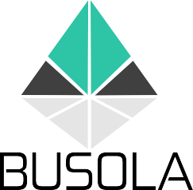

BUSOLA
Płock, Poland – Project Coordinator
en.busola.edu.plzakladkarnyplock@gmail.com
The Socially Excluded Education Association “Busola” was established in Płock, Poland, in 2016. The organisation works primarily in the fields of education, social inclusion and rehabilitation, with particular experience in supporting prisoners and other people at risk of social exclusion. Its activities include educational, cultural, sporting, health-promoting and training initiatives. Busola also has extensive experience in European cooperation and Erasmus+ projects, particularly in adult education and initiatives supporting disadvantaged groups. Within Deep Breath, Busola acts as the project coordinator, bringing its experience in project management, education and social rehabilitation to the partnership.